最近の写真のほとんどは，facebookの「森田良文研究室」に掲載されています．
こちらもご覧ください．ただし，写真をご覧いただくためには，
事前にFacebookのログインが必要です．
- 森田先生がSI2017優秀講演賞を受賞．講演「柔らかさを利用した把握力調整能力のトレーニング評価デバイス」
- 公益社団法人日本技術士会 中部本部 中部電気電子情報工学部会 9月度 講演会（名工大）
- 平成29年度 電気・電子・情報関係学会 東海支部連合大会（名古屋大学）
- 2017高速信号処理応用技術学会研究会(近畿大学広島キャンパス)
- i-CREATe2017 in Kobe (international Convention on Rehabilitation Engineering & Assistive Technology)
- Myongji University – Nagoya Institute of Technology Joint Workshop (Dept. of Electrical Engineering, MYONGJI UNIVERSITY)
- 2017 The 3rd International Conference on Control, Automation and Robotics (ICCAR 2017 in Nagoya)
- iWakka普及研究会主催 iWakkaセミナーのチラシ
- 平成28年度名古屋工業大学基金学生研究奨励（副学長表彰）
- 平成28年10月度入学式
- 公益財団法人中部科学技術センター中部公設試験研究機関研究者表彰
- ペットボトルキャップ荷重計@アイム
- 平成27年度名古屋工業大学基金学生研究奨励（副学長表彰）
- iWakkaセミナーのチラシ
- 中日新聞朝刊掲載写真（UR-Robo）
- 平成27年度電気・電子・情報関係学会東海支部連合大会（名工大）
- NITRo，特別功労部門で学生表彰(新聞記事)
- 2011年森田佐藤研忘年会
- 戚君歓迎会
- RESKO2011
- ICCAS2011
- テクノフェア2011
- BMEI2011
- 鉄工会経営研究会 10月度オープン講座
- 結婚式
- 平成23年度電気関係学会東海支部連合大会
- 最先端医療福祉・生活支援テクノロジー
- 2011ゼミ旅行 ～日間賀島～
- Budapest University
- 夢ナビライブ
- Robomec2011
- 第三回次世代健康医療産業創出研究会
- Dong-Eui University訪問
- ICCAS2010
- 中国清華大学 季林紅研究室訪問
- BMEI2010
- 2010ゼミ旅行 ～恵那～
- Mini-Lecture at Morita Laboratory
- 平成22年度電気関係学会東海支部連合大会
- ICMIT2009
- Dong-Eui University訪問
- 2009ゼミ旅行 ～湯ノ山～
- 平成21年電気学会産業応用部門大会 YPC
- Robomec2009
- 神藤久教授の退職記念パーティー(要PWD)
- 2008ゼミ旅行 ～伊勢～
- 2007ゼミ旅行
- 写真置き場